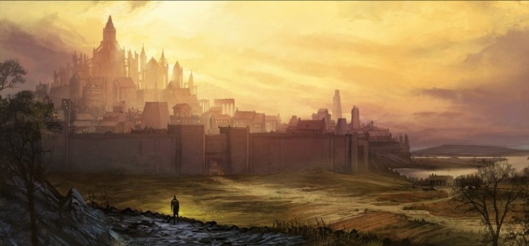

If any place in the world exemplifies humanity's potential for greatness, it is the nascent nation of Elturgard. A half century ago, the city of Elturel was a petty power, ruled by a vampire, and afflicted with a plague of undead. Each night the good people of Elturel prayed to the gods that dawn might come swiftly. Until one dark, fateful night when the dawn came for good.
On that night in 1444 DR, before the true dawn, a blazing golden orb appeared in the sky above Elturel, like a second sun. The warm golden light shed by this sphere was bright as the day, and equally fatal to the vampire lord and his spawn, who were caught outside when it appeared. This orb, which came to be called the Companion, has remained unmoving in the sky over Elturel for the past fifty years.
This miracle has brought pilgrims of all kinds: the devout, the curious, and the afflicted. To this day, it is unknown which god bestowed this miracle upon the city. Holy orders dedicated to Helm, Torm, Tyr, and Lathander initially each claimed the Companion as a gift from their god, leading to petty squabbles that were ultimately resolved by inviting the members of these orders to swear the Creed Resolute. The prominence of these holy orders devoted to the Companion have given Elturel a well-deserved reputation for safety and order, a reputation that stands in stark contrast to that of its neighbor on the River Chionthar—Baldur’s Gate.
Elturgard is so-called because it is guarded by the city of Elturel and its Hellriders. The capital stands on a hill overlooking the River Chionthar, constantly illuminated by the Companion. In the city’s center, directly beneath the Companion, the High Hall stands atop a cliff-sided tor. This castle is home to the High Observer and a great deal of the bureaucracy of Elturgard. A stream runs out of the center of the castle and flows north across the top of the tor and then down one of its cliffs in a series of waterfalls known as the Maidens’ Leap. By canal it forms a moat for the eastern Dock District, before joining the Chionthar. Along this stream atop the tor runs a long, narrow garden. The richest citizens of Elturel live near this garden, while folk in the town below dwell mostly in tall, narrow homes rich in balconies and windows.
The ruler of Elturgard was known as the High Rider until destruction of the last High Rider, the vampire lord Klav Ikaia. After the arrival of the Companion, a woman named Naja Bellandi, who led the temple of Helm in the city, assumed the post of High Observer, as the ruler of Elturgard has been called ever since. The current High Observer is a human man named Thavius Kreeg. He is aided in his just and wise rule by two groups of guardians—the Hellriders and the Order of the Companion. Both groups today use the same heraldry, the sun and a smaller companion sun surrounded in a blaze.
The Order of the Companion was formed when several different holy orders all agreed to swear the Creed Resolute, ending their quarrels with one another. These knights and clerics of Helm, Torm, Tyr, and Lathander united in a new order dedicated to the Companion. Many of their rituals have come to be centered on the Companion itself, rather than any specific god.
The Companions, as they are sometimes called, are each a member of a temple or holy order dedicated to a god. Since the creation of the Creed Resolute, it has become standard practice for any person taking holy orders in Elturgard to join the Order and swear the Creed, no matter which god they follow. Today the Order includes devotees of nearly every god worshipped in Elturgard.
The Creed Resolute is quite long, and includes pages of details about how a member of the Order of the Companion should act. But the most important part is the oath that each member of the Order swears upon joining.
Who could forget the shining sight of a host of Hellriders riding out on the field, banners taught and snapping, breastplates and shields agleam with the symbol of Elturgard, and each bearing a holy symbol of his or her god—armor for the soul. The zeal and bravado of the Hellriders in pursuit of righteousness seems something uniquely human, and uniquely hopeful. With this bright example to look up to, is it any wonder that the common people of Elturgard also tend to be both just and pious?
Legend has it that over a century ago, a group of knights from Elturel boldly ventured into Avernus, the first of the Nine Hells, to pursue and destroy devils that had been plaguing the people of Elturgard. Although few returned, those that did were celebrated, and the group was named the Hellriders for their heroic feat. They have served as the military guardians of Elturgard ever since. Their patrols throughout Elturgard have made Elturel a popular stopover for travelers and traders. Nowhere in Faerûn is safer from brigands and rampaging monsters.
After the emergence of the Companion, the Hellriders were at a low point. The vampire spawn of High Rider Ikaia had infiltrated their leadership, and the people preferred to look to the newly minted Order of the Companion for protection. The remaining Hellriders agreed to also swear the Creed Resolute, and its members continue to do so today. Since then, they have rebuilt their numbers and their reputation. Today, the two orders work closely together.
A few other major settlements of note are located within the borders of Elturgard.
Berdusk. A large population of artisans drives the activity in the city of Berdusk. Its native nobility, the so-called “First Folk of Berdusk,” have made a great show of their piety since the founding of Elturgard, and a great many of the high-ranking priests hail from their families. Over the years a few bad apples in their midst have given Berduskans a reputation for the sin of “false piety”—pretending to a stronger faith than one actually possesses. This has given rise to the expression “as holy as a Berduskan priest,” which is to say, not very.
Fort Tamal. The Boareskyr Bridge stands on the Trade Way and is the only consistently safe crossing over the Winding Water for more than a hundred miles in either direction. This alone makes it remarkable, but it is also known that here a mortal man killed Bhaal, the god of murder. As a consequence, the river’s waters run black and foul for miles west of the bridge.
The Hellriders control a keep on the southern bank. For many years, this keep was a ruin, used by caravan masters as a safe resting point, and was known simply as “Bridgefort.” Before the current High Observer came to power, he had a rival for the position, a paladin named Tamal Thent. She and her entire retinue went missing near the bridge. After he was elevated, one of Thavius Kreeg’s first acts as High Observer was to rename the fort in her honor.
Today, an assignment at Fort Tamal is regarded by many Hellriders as a punishment—a common result of accusations of insubordination.
Scornubel. Known far and wide as the City of Caravans, Scornubel is the great trading nexus of Elturgard. Though responsible for a great deal of the nation’s prosperity, it is also the source of plenty of its trouble; Scornubel is a haven for outlanders, many of whom are either troublemakers or folk whom trouble is pursuing. Add to this the machinations of Scornubel’s native merchant-princes and the rumors of a thieves’ guild somewhere in its walls, and it can be understood why the saying “The High Observer’s headache is named Scornubel” has some merit.
Triel. Triel is a small walled town with supporting farmsteads strung along the road to the north and south. It is a waypoint settlement much like any other except for the existence of the Black Abbey. This dark stone structure once served as a monastery to Bane and lay in ruins for many years. Now priests of Bane have begun rebuilding it, bringing an influx of wealth and trade, along with many skilled masons and laborers. Some question the desirability of a temple to Bane in Elturgard, but others encourage them to recall the Creed Resolute, with its oath to permit no difference of faith to come between the brothers and sisters who swear it. For their part, the priests of Bane have pledged to aid in Triel’s defense against any threats, a promise that gives some solace to the suspicious.